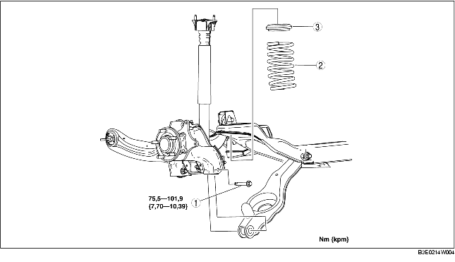

1. Ta loss den bakre givaren för automatisk nivåjustering. (Se DEMONTERING/MONTERING AV GIVARE FÖR AUTOMATISK NIVÅJUSTERING.)
2. Demontera bakre krängningshämmare. (Se DEMONTERING/MONTERING AV BAKRE KRÄNGNINGSHÄMMARE.)
3. Demontera i den ordning som anges i tabellen.
4. Montera i omvänd ordning mot demonteringen.
5. Kontrollera hjulinställningen och justera vid behov.
(Se HJULINSTÄLLNING BAK.)

.
1. Stöd den nedre länkarmen med en domkraft.
2. Lossa bakre nedre länkarmens inre bult.
3. Demontera bakre nedre länkarmsbulten (utsidan).
1. Sätt domkraften under den bakre nedre länkarmen och hissa långsamt upp.
2. Rikta in den övre änden av den bakre spiralfjädern med steget på det övre fjädersätesgummit.
3. Rikta in den nedre änden av den bakre spiralfjädern med steget på det nedre fjädersätesgummit.
4. Montera bulten på nedre länkarmen.